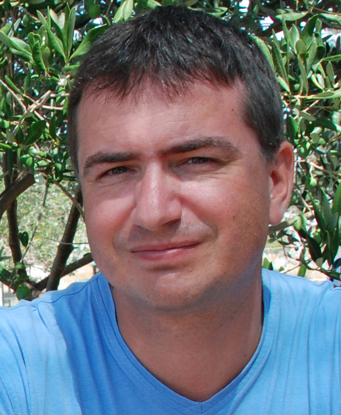
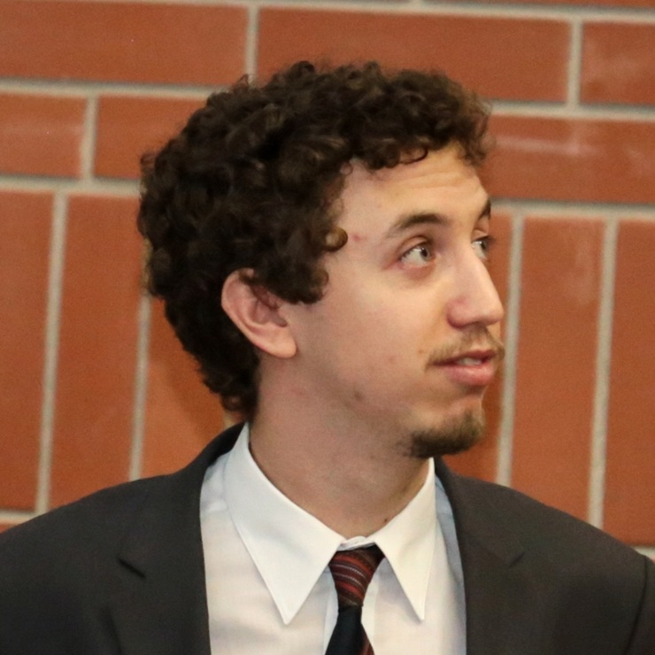
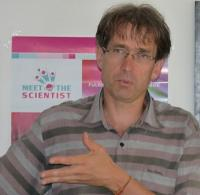

Kik vagyunk

Dr. Boza Gergely
tudományos munkatárs, Ökológiai Kutatóközpont, Evolúciótudományi Intézet
Tudományos érdeklődésem a komputációs biológia, az evolúciós játékelmélet és az evolúciós ökológia köré szerveződik. (Tudományos tevékenységem itt nyomon követhető.) 2006 és 2008 között a Kölcsey Ferenc Gimnáziumban tanítottam biológiát, azóta az ELTE-n oktattam Biostatisztikát, Integratív biológiát és Evolúcióbiológiát. 2012 óta részt veszek a Kutatók Éjszakáján az "Evolúció éjszakája" című interaktív programsorozat szervezésében.

Hubai András
tudományos segédmunkatárs, Ökológiai Kutatóközpont, Evolúciótudományi Intézet
Kutatásaim során komputációs biológiával foglalkozom, valamint a biológiai mechanizmusok és azok evolúcióra gyakorolt rendszerszintű hatásainak kapcsolatával. (Tudományos tevékenységem itt nyomon követhető.)
Az ELTE-n évek óta oktatok Biostatisztikát és Programozást biológusoknak. Évek óta részt veszek a Kutatók éjszakája programon belül az "Evolúció Éjszakája" című interaktív foglalkozás szervezésében. Éveken át szerveztem az Élettudományi Liftbeszéd Fesztiválokat az ELTE-n.
Mokos Judit
tudományos segédmunkatárs, MTA-ELTE
Doktorandusz hallgatóként főként az emberi együttműködés evolúciós hátterére koncentrálok. Az ELTE-n éveken át oktattam Biostatisztikát, valamint tartottam "data science" workshopokat. Hét éven át dolgoztam egy családsegítő központbn, ahol speciális igényű gyerekekkel foglalkoztam. 2014 óta részt veszek a Kutatók Éjszakáján megrendezett "Evolúció Éjszakája" program szervezésében. 2018-ban bejutottam a FameLab tudománykommunikáció verseny magyarországi döntőjébe. 2016-ban megnyertem az Élettudományi Liftbeszéd Fesztivál PhD-szekcióját.
 Dr. Müller Viktor
Dr. Müller Viktor
tudományos munkatárs, ELTE TTK Növényrendszertani, Ökológiai és Elméleti Biológiai Tanszék
Tudományos érdeklődésem középpontjában a számítógépes modellezés, valamint a virológia és az immunológia evolúciós elméletének adatelemzése áll. (Tudományos tevékenységem itt nyomon követhető.)
Az ELTE-n A HIV fertőzések matematikai modellezése, valamint a Számítógépes modellezés a biológiában című tárgyakat oktatom. Oktatom továbbá a Modelling Course in Population and Evolutionary Biology című tárgyat az ETH Zürich egyetemen. 2011 óta szervezek egy tudománynépszerűsítő előadássorozatot az ELTE-n, 2012 óta szervezem az évente megrendszésre kerülő ELTE Biológus tavaszi iskolát. 2012 óta részt veszek a Kutatók Éjszakáján megrendezett "Evolúció Éjszakája" program szervezésében. Számos tudománynépszerűsítő előadást tartottam különböző hallgatóságnak.

Dr. Scheuring István
tudományos tanácsadó, Ökológiai Kutatóközpont, Evolúciótudományi Intézet
Tudományos érdeklődési körömbe tartozik az evolúciós játékelmélet, az evolúciós ökológia, az emberi együttműködés evolúciós háttere. (Tudományos tevékenységem itt nyomon követhető.) Több mint 30 éve oktatok az ELTE-n. Jelenleg a biológia mesteraszakos hallgatóknak oktatok különböző evolúcióbiológiai és ökológiai tárgyakat. Évek óta tartok interaktív foglalkozásokat és előadásokat a Kutatók Éjszakája program keretében. Közel 30 ismeretterjesztő cikket írtam magyar nyelven különböző ismeretterjesztő folyóiratokba. 2015 óta a Bátor Tábor természettudományos programjának vagyok a szakértője.
 Dr. Vásárhelyi Zsóka
Dr. Vásárhelyi Zsóka
tudományos munkatárs, Ökológiai Kutatóközpont, Evolúciótudományi Intézet
Tudományos érdeklődésem központjában a munkamegosztás evolúciója áll az embernél és más állatoknál (tudományos tevékenységem itt nyomon követhető.) Az ELTE TTK-n oktattam Biostatisztikát, illetve tartottam az ember evolúciójával kapcsolatos szemináriumokat. 2012 óta rendezünk interaktív foglalkozásokat és kerekasztal-beszélgetéseket a Kutatók Éjszakája program keretében. Éveken át szerveztem az Élettudományi Liftbeszéd Fesztiválokat az ELTE-n. Szabadidőmben éveken át foglalkoztam hiperaktív és figyelemzavaros gyerekekkel.